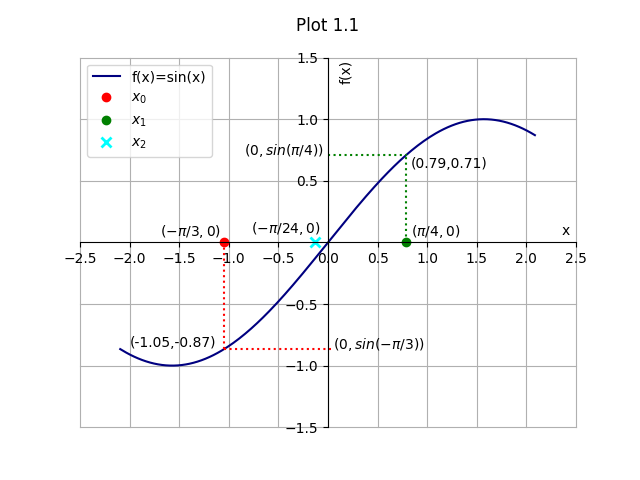

Index ################################################################# Bisection Method ################################################################# Bisection method for finding roots of non-linear function equations gets on with its work just like Binary search does for searching in a sorted array. Two initial guesses are provided which act as bounds for finding the root. The initial guesses play an important role here (more on that later). The function is evaluated at the mid point. If the point evaluated to one of the roots of the equation, the solution is accepted; else, a hint is taken whether the root lies in the left half or the right half of the interval, and based on that hint, either of the two halves is selected. Then, for the next iteration of root finding, the function is futher evaluated at the mid point of the selected half in a similar fashion. This is done till a root is encountered within permissible error limits. The initial guesses of the bounds should be made smartly in order for algorithm to converge. If the function evaluates to a negative value at one point and to a positive value at another, the function should evaluate to zero somewhere in the interval, provided, (a) the function is continuous, (b) the function does not contain a point of singularity within the interval. (Convergence to point of singularity can be easily identified by unexpectedly large evaluations of the function at those points, instead of obtaing a zero.) Thus, such points can be considered as bounds for bracketing the interval. Once the initial guesses for the 2 points are made, the function is evaluated at the mid point of the interval. If, within permissible error limits, the mid point evaluates to a root of the function, the value of that point is accepted as the root, and returned by the program. If that does not happen (a more likely case), the value of function is evaluated at that point. (a) If the value of function is positive, the point replaces the previous bound evaluated to positive value to become the new bound. (b) If the value of function is negative, the point replaces the previous bound evaluated to negative value to become the new bound. The function is then evaluated at the mid point of the new bounds over and over again till a mid point of some interval gives us the value of the root within the permissible error limits. Suppose f(x)=sin(x) In the graphs for sine function given below, red and green dots represent the lower and upper bounds for the search respectively, and blue cross represents the mid point of the bounded interval.

The above plot 1.1 shows the first iteration of the algorithm. x0 and x1 are the initial guesses of upper and lower bounds equal to -pi/3 and pi/4 respectively. x2, the mid point is considered for evaluation. Since it is not close enough to the root, the algorithm proceeds to next iteration where the condition is represented as shown in plot 1.2. x2 becomes the new lower bound for the next iteration.
The condition for the second iteration involves x3 being considered as the new mid point which does not qualify as a root of the equation and thus ends up becoming an upper bound for the next iteration.
Upon further iterations, which occur in the same way, the interval tends to converge towards the root of the function and when the mid point of the interval becomes almost equal to the value of the root of function within the permissible error limits, the value of xi+1for ith iteration is returned as the value of the root. Drawbacks: (a) Finding roots of functions having no negative value of f(x) for any value of x is not possible, as given in the plot below.
(b) Convergence of interval is slow (commonly regarded as linear). (c) Converges to only one root in the interval even if multiple roots are present. Our choice of bounds influences which root is returned as output. (d) Converges readily to point of singularity in the interval, if any. Despite these drawbacks, bisection method is often a good choice because it is guaranteed to converge to root, provided the given interval contains at least one of the roots of function, or will converge to point of singularity, if any. All graphs are plotted using python matplotlib. See plots index for programs